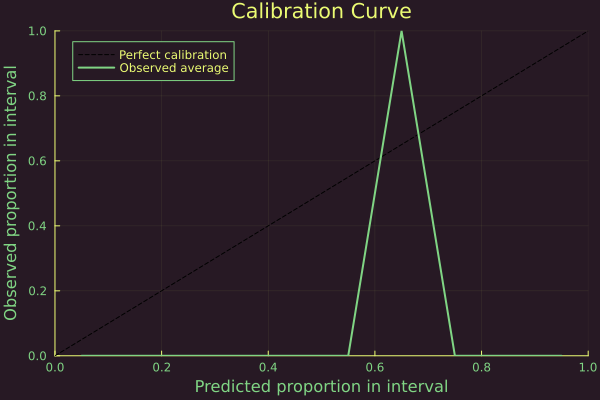

Multi-class problem
Libraries
using Pkg; Pkg.activate("docs")
# Import libraries
using Flux, Plots, TaijaPlotting, Random, Statistics, LaplaceRedux
theme(:lime)Data
using LaplaceRedux.Data
seed = 1234
x, y = Data.toy_data_multi(seed=seed)
X = hcat(x...)
y_onehot = Flux.onehotbatch(y, unique(y))
y_onehot = Flux.unstack(y_onehot',1)split in training and test datasets
# Shuffle the data
Random.seed!(seed)
n = length(y)
indices = randperm(n)
# Define the split ratio
split_ratio = 0.8
split_index = Int(floor(split_ratio * n))
# Split the data into training and test sets
train_indices = indices[1:split_index]
test_indices = indices[split_index+1:end]
x_train = x[train_indices]
x_test = x[test_indices]
y_onehot_train = y_onehot[train_indices,:]
y_onehot_test = y_onehot[test_indices,:]
y_train = vec(y[train_indices,:])
y_test = vec(y[test_indices,:])
# bring into tabular format
X_train = hcat(x_train...)
X_test = hcat(x_test...)
data = zip(x_train,y_onehot_train)
#data = zip(x,y_onehot)MLP
We set up a model
n_hidden = 3
D = size(X,1)
out_dim = length(unique(y))
nn = Chain(
Dense(D, n_hidden, σ),
Dense(n_hidden, out_dim)
)
loss(x, y) = Flux.Losses.logitcrossentropy(nn(x), y)training:
using Flux.Optimise: update!, Adam
opt = Adam()
epochs = 100
avg_loss(data) = mean(map(d -> loss(d[1],d[2]), data))
show_every = epochs/10
for epoch = 1:epochs
for d in data
gs = gradient(Flux.params(nn)) do
l = loss(d...)
end
update!(opt, Flux.params(nn), gs)
end
if epoch % show_every == 0
println("Epoch " * string(epoch))
@show avg_loss(data)
end
endLaplace Approximation
The Laplace approximation can be implemented as follows:
la = Laplace(nn; likelihood=:classification)
fit!(la, data)
optimize_prior!(la; verbose=true, n_steps=100)with either the probit approximation:
_labels = sort(unique(y))
plt_list = []
for target in _labels
plt = plot(la, X_test, y_test; target=target, clim=(0,1))
push!(plt_list, plt)
end
plot(plt_list...)
or the plugin approximation:
_labels = sort(unique(y))
plt_list = []
for target in _labels
plt = plot(la, X_test, y_test; target=target, clim=(0,1), link_approx=:plugin)
push!(plt_list, plt)
end
plot(plt_list...)
Calibration Plots
In the case of multiclass classification tasks, we cannot plot the calibration plots directly since they can only be used in the binary classification case. However, we can use them to plot the calibration of the predictions for 1 class against all the others. To do so, we first have to collect the predicted categorical distributions
predicted_distributions= predict(la, X_test,ret_distr=true)1×20 Matrix{Distributions.Categorical{Float64, Vector{Float64}}}:
Distributions.Categorical{Float64, Vector{Float64}}(support=Base.OneTo(4), p=[0.0569184, 0.196066, 0.0296796, 0.717336]) … Distributions.Categorical{Float64, Vector{Float64}}(support=Base.OneTo(4), p=[0.0569634, 0.195727, 0.0296449, 0.717665])then we transform the categorical distributions into Bernoulli distributions by taking only the probability of the class of interest, for example the third one.
using Distributions
bernoulli_distributions = [Bernoulli(p.p[3]) for p in vec(predicted_distributions)]20-element Vector{Bernoulli{Float64}}:
Bernoulli{Float64}(p=0.029679590887034743)
Bernoulli{Float64}(p=0.6682373773598078)
Bernoulli{Float64}(p=0.20912995228011141)
Bernoulli{Float64}(p=0.20913322913224044)
Bernoulli{Float64}(p=0.02971989045895732)
Bernoulli{Float64}(p=0.668431087463204)
Bernoulli{Float64}(p=0.03311710703617972)
Bernoulli{Float64}(p=0.20912981531862682)
Bernoulli{Float64}(p=0.11273726979027407)
Bernoulli{Float64}(p=0.2490744632745955)
Bernoulli{Float64}(p=0.029886357844211404)
Bernoulli{Float64}(p=0.02965323602487074)
Bernoulli{Float64}(p=0.1126799374664026)
Bernoulli{Float64}(p=0.11278538625980777)
Bernoulli{Float64}(p=0.6683139127616431)
Bernoulli{Float64}(p=0.029644435143197145)
Bernoulli{Float64}(p=0.11324691083703237)
Bernoulli{Float64}(p=0.6681422555922787)
Bernoulli{Float64}(p=0.668424345470233)
Bernoulli{Float64}(p=0.029644891255330787)Now we can use Calibration_Plot to see the level of calibration of the neural network
plt = Calibration_Plot(la,hcat(y_onehot_test...)[3,:],bernoulli_distributions;n_bins = 10);
The plot is peaked around 0.7.
A possible reason is that class 3 is relatively easy for the model to identify from the other classes, although it remains a bit underconfident in its predictions. Another reason for the peak may be the lack of cases where the predicted probability is lower (e.g., around 0.5), which could indicate that the network has not encountered ambiguous or difficult-to-classify examples for such class. This once again might be because either class 3 has distinct features that the model can easily learn, leading to fewer uncertain predictions, or is a consequence of the limited dataset.
We can measure how sharp the neural network is by computing the sharpness score
sharpnessclassification(hcat(yonehottest…)[3,:],vec(bernoullidistributions))
```
The neural network seems to be able to correctly classify the majority of samples not belonging to class 3 with a relative high confidence, but remains more uncertain when he encounter examples belonging to class 3.